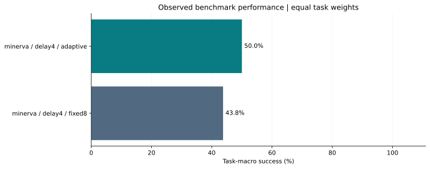
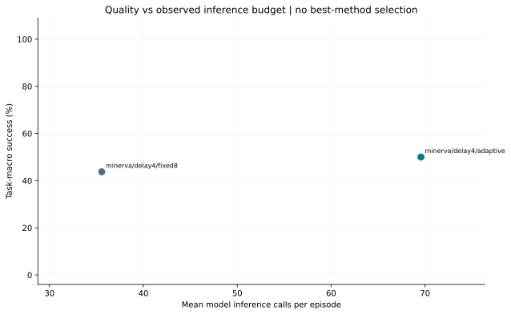
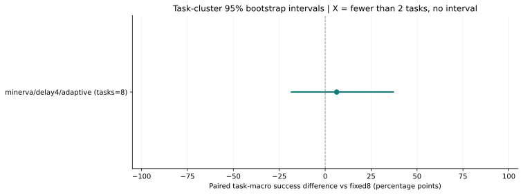

预训练机器人策略 · 实验报告
How does feedback frequency affect task success and inference cost on a fixed CPU policy?
任务簇少于 10 个，跨任务效应和置信区间不稳定；不能据此声称普遍优于基线。
研究问题与实验边界
预声明假设：Observation-triggered replanning may preserve success with fewer inference calls; a negative result is allowed.
本项目研究公开预训练策略在基准任务中的闭环执行与推理预算。已知任务的保留初态评估不等于新技能泛化，也不等于真机或通用 VLA 能力验证。调度规则是候选工程启发式，不声称算法首创或 SOTA。
当前数据：完成 32 回合，错误 0 回合，缺失 0 回合。失败回合按原样保留；完整报告要求全部计划回合产生有效结果。
冻结协议与划分
{
"plan": {
"name": "paired-sensor-delay",
"models": [
{
"name": "minerva",
"methods": [
{
"name": "fixed8",
"scheduler": {
"mode": "fixed",
"fixed_interval": 8,
"temporal_ensemble": true,
"ensemble_coeff": 0.01
}
},
{
"name": "adaptive",
"scheduler": {
"mode": "adaptive",
"min_interval": 2,
"max_interval": 15,
"temporal_ensemble": true,
"ensemble_coeff": 0.01,
"vision_threshold": 0.015,
"gripper_threshold": 0.001
}
}
]
}
],
"tasks": [
{
"suite": "libero_spatial",
"task_id": 1,
"record_video": true
},
{
"suite": "libero_spatial",
"task_id": 6,
"record_video": false
},
{
"suite": "libero_object",
"task_id": 1,
"record_video": false
},
{
"suite": "libero_object",
"task_id": 6,
"record_video": false
},
{
"suite": "libero_goal",
"task_id": 1,
"record_video": false
},
{
"suite": "libero_goal",
"task_id": 6,
"record_video": false
},
{
"suite": "libero_10",
"task_id": 1,
"record_video": false
},
{
"suite": "libero_10",
"task_id": 6,
"record_video": false
}
],
"initial_states": [
11,
29
],
"conditions": [
"delay4"
],
"seed": 1000,
"threads": 2,
"image_size": 360,
"warmup_calls": 2,
"rotate_method_order": true,
"split": "held-out sensor stress test",
"question": "How does feedback frequency affect task success and inference cost on a fixed CPU policy?",
"hypothesis": "Observation-triggered replanning may preserve success with fewer inference calls; a negative result is allowed.",
"limitations": [
"Frozen published checkpoint; no retraining-seed claim.",
"Known tasks and published held-out initial states; not unseen-language generalization.",
"Simulation pauses during inference; delay4 is prescribed sensor delay, not asynchronous real-time control.",
"Calls are the primary compute proxy. Wall-clock measurements on a shared laptop are descriptive.",
"Few initial states per task; screening evidence, not a full published benchmark reproduction."
],
"selected_on_development": "adaptive_low"
},
"sources": {
"experiment.py": "da83af6ce069fc74a727f3c790bc59e7089e2bc53e4e8fe87e797219d44b3cf3",
"policies.py": "ad036be156049e9721ddf892e4e7ad8e66ee0e88c181cc66a125c0b76712f66a",
"runtime.py": "4296c85ae0060f9b6137872c6e88ed69fce49964cd1b5207da1a19c413f0b1f5",
"simulator.py": "3fa8762b03bd9dd85f426242714d3422bc19f6fc7f9d9444fd4cac4785ad95d3",
"scheduling.py": "6698253906434d6e2523b4ad3a77c18ae448872558fed341360858f6417f64ce"
},
"runtime_versions": {
"torch": "2.7.1+cpu",
"torchvision": "0.22.1+cpu",
"numpy": "2.2.6",
"mujoco": "3.3.2",
"robosuite": "1.4.0",
"hf-libero": "0.1.4",
"lerobot": "0.6.1",
"transformers": "5.5.4",
"safetensors": "0.8.0"
},
"artifacts": {
"upstream_commit": "64c3cc8be364eb62df4f9fdc4bdccb1be9d1118e",
"models": {
"minerva": {
"revision": "1b4fb1743f00a7d8eb87c7059c446447907d12bf",
"files": {
"config.json": "bbd0e5bc61d3ce2e002f2d0889f90f4af1cc7193a0ad65629f7ece14e2eac276",
"model.safetensors": "f173def4c0b11030161486401dce52e63471d4180c248779678eaa6952c32da5",
"policy_postprocessor.json": "697e6bf50a3f99b0677a9e797babb5ce2e0d17acf8fcd15596ba3ac0bc7a5a72",
"policy_postprocessor_step_0_unnormalizer_processor.safetensors": "a002c0df7f79c5b169c5a899ad151d4ea1bed246c7d82bd93ed1556558d517a9",
"policy_preprocessor.json": "7b095590a92959edb15083469bb0d27f13094c8fe0cd816633173fd96f612ba1",
"policy_preprocessor_step_4_normalizer_processor.safetensors": "f98234b21ce8ffacf1b86657f3cf8e24ac6c31ebcd6a3b83cecd484439674306",
"train_config.json": "517dd29d692bf959070ccbda2d7faad1dd4437ff132607faa6bff281639c27ec",
"README.md": "2c70b086ff31e41da03adcd216b9c110ba78931994347f74e1a6954392628c73"
}
}
},
"assets_revision": "0b3ea86be5fe169d0fd036ae63d1070ec09e90f6",
"assets_manifest_sha256": "1d59e339a7159e738c8e38aab5a703ab022a3607fc085835c09a431e0e604d42"
},
"fingerprint": "1859c1210e1283c907d2fb083d348ed0fa4559731182ba6618c4af57f5e7a65f",
"question": "How does feedback frequency affect task success and inference cost on a fixed CPU policy?",
"hypothesis": "Observation-triggered replanning may preserve success with fewer inference calls; a negative result is allowed.",
"split": "held-out sensor stress test",
"limitations": [
"Frozen published checkpoint; no retraining-seed claim.",
"Known tasks and published held-out initial states; not unseen-language generalization.",
"Simulation pauses during inference; delay4 is prescribed sensor delay, not asynchronous real-time control.",
"Calls are the primary compute proxy. Wall-clock measurements on a shared laptop are descriptive.",
"Few initial states per task; screening evidence, not a full published benchmark reproduction."
],
"created_at": "2026-10-14T07:17:36.781699+00:00"
}执行方法与可复现实现
预训练模型输出动作块；统一调度器决定何时重新推理以及如何使用仍有效的历史预测。fixed8 指本实验统一执行器的固定 8 步对照，不自动等同原论文默认评测结果。观察变化策略只使用当前与过去的相机和夹爪观测，不读取任务成功标志、奖励或真实物体位置。
方法间共用配对初态、种子和模型权重；具体阈值、执行间隔、时间集成开关以及回合上限见实际配置。候选阈值应只在开发集确定，并在正式测试前冻结。
已执行方法的实际配置
{
"minerva / delay4 / adaptive": [
{
"mode": "adaptive",
"fixed_interval": 8,
"min_interval": 2,
"max_interval": 15,
"vision_threshold": 0.015,
"gripper_threshold": 0.001,
"use_vision": true,
"use_gripper": true,
"temporal_ensemble": true,
"ensemble_coeff": 0.01,
"horizon": 520,
"thumbnail_size": 16,
"front_image_key": "observation.images.image",
"state_key": "observation.state"
},
{
"mode": "adaptive",
"fixed_interval": 8,
"min_interval": 2,
"max_interval": 15,
"vision_threshold": 0.015,
"gripper_threshold": 0.001,
"use_vision": true,
"use_gripper": true,
"temporal_ensemble": true,
"ensemble_coeff": 0.01,
"horizon": 300,
"thumbnail_size": 16,
"front_image_key": "observation.images.image",
"state_key": "observation.state"
},
{
"mode": "adaptive",
"fixed_interval": 8,
"min_interval": 2,
"max_interval": 15,
"vision_threshold": 0.015,
"gripper_threshold": 0.001,
"use_vision": true,
"use_gripper": true,
"temporal_ensemble": true,
"ensemble_coeff": 0.01,
"horizon": 280,
"thumbnail_size": 16,
"front_image_key": "observation.images.image",
"state_key": "observation.state"
}
],
"minerva / delay4 / fixed8": [
{
"mode": "fixed",
"fixed_interval": 8,
"min_interval": 2,
"max_interval": 15,
"vision_threshold": 0.04,
"gripper_threshold": 0.02,
"use_vision": true,
"use_gripper": true,
"temporal_ensemble": true,
"ensemble_coeff": 0.01,
"horizon": 520,
"thumbnail_size": 16,
"front_image_key": "observation.images.image",
"state_key": "observation.state"
},
{
"mode": "fixed",
"fixed_interval": 8,
"min_interval": 2,
"max_interval": 15,
"vision_threshold": 0.04,
"gripper_threshold": 0.02,
"use_vision": true,
"use_gripper": true,
"temporal_ensemble": true,
"ensemble_coeff": 0.01,
"horizon": 300,
"thumbnail_size": 16,
"front_image_key": "observation.images.image",
"state_key": "observation.state"
},
{
"mode": "fixed",
"fixed_interval": 8,
"min_interval": 2,
"max_interval": 15,
"vision_threshold": 0.04,
"gripper_threshold": 0.02,
"use_vision": true,
"use_gripper": true,
"temporal_ensemble": true,
"ensemble_coeff": 0.01,
"horizon": 280,
"thumbnail_size": 16,
"front_image_key": "observation.images.image",
"state_key": "observation.state"
}
]
}成功率与推理成本
| 模型 | 条件 | 方法 | 任务 / 回合 | 任务宏成功率 | 成功 / 回合 | 均值调用数 | 均值步数 | 调用 / 百步 | 均值模型耗时 / 秒 | 累计墙钟 / 分 |
|---|---|---|---|---|---|---|---|---|---|---|
| minerva | delay4 | adaptive | 8 / 16 | 50.0% | 8 / 16 | 69.6 | 286.9 | 24.2 | 8.03 | 25.81 |
| minerva | delay4 | fixed8 | 8 / 16 | 43.8% | 7 / 16 | 35.6 | 282.6 | 12.6 | 5.11 | 24.71 |
任务宏成功率先在每个 (suite, task_id) 内求初态/种子平均，再等权平均任务。成功计数为回合计数；调用数与模型耗时为回合均值。累计墙钟为完成回合耗时之和，不代表包含安装、下载和全部进程启动的项目总工时。成功提前结束会减少回合调用数；因此另列实际执行步数与每百步调用率。不同推理预算的结果应作为质量—成本曲线解释。
运行成本分解
| 模型 / 条件 / 方法 | 模型推理 | 预处理 | 控制辅助开销（含反归一化/队列/集成） | 仿真 | 墙钟 |
|---|---|---|---|---|---|
| minerva / delay4 / adaptive | 8.033 | 3.524 | 2.194 | 71.570 | 96.782 |
| minerva / delay4 / fixed8 | 5.106 | 3.396 | 1.297 | 71.673 | 92.675 |
所有数值为每回合平均秒数，直接来自原始计时字段。墙钟包含该回合其他开销；此表不把推理调用次数视作不同模型之间等价的计算量。
与固定 8 步基线的配对对照
| 模型 / 条件 / 方法 | 任务 / 配对 | 差异 / 百分点 | 任务簇 95% CI | 胜 / 负 / 平 | 调用数减少 | 未配对候选 / 基线 |
|---|---|---|---|---|---|---|
| minerva / delay4 / adaptive | 8 / 16 | +6.2 | [-18.8, +37.5] | 2 / 1 / 13 | -95.6% | 0 / 0 |
按模型、条件、任务、初态和随机种子严格配对。差异为候选减基线。95% 区间用固定种子进行 2,000 次任务簇重采样，保持同任务试验一起出现；该区间以现有初态和模型权重为条件，不包括训练随机性或真机迁移的不确定性。少于两个任务不计算区间；少量任务或零宽度区间不能证明结论稳定。
可导出图表



逐回合证据与回放
回放展示遵循协议顺序，最多展示前六条已保存录像；所有录像均在下表链接，不按成功挑选。


逐回合记录（包括缺失与错误）
| 模型 / 任务 / 方法 | 初态 / 种子 | 状态 / 结果 | 证据 |
|---|---|---|---|
| minerva / libero_spatial:1 / fixed8 | 11 / 1000 | complete / 失败 | 原始 JSON · 回放 |
| minerva / libero_spatial:1 / adaptive | 11 / 1000 | complete / 成功 | 原始 JSON · 回放 |
| minerva / libero_spatial:1 / adaptive | 29 / 1000 | complete / 成功 | 原始 JSON |
| minerva / libero_spatial:1 / fixed8 | 29 / 1000 | complete / 失败 | 原始 JSON |
| minerva / libero_spatial:6 / adaptive | 11 / 1000 | complete / 成功 | 原始 JSON |
| minerva / libero_spatial:6 / fixed8 | 11 / 1000 | complete / 成功 | 原始 JSON |
| minerva / libero_spatial:6 / fixed8 | 29 / 1000 | complete / 失败 | 原始 JSON |
| minerva / libero_spatial:6 / adaptive | 29 / 1000 | complete / 失败 | 原始 JSON |
| minerva / libero_object:1 / fixed8 | 11 / 1000 | complete / 失败 | 原始 JSON |
| minerva / libero_object:1 / adaptive | 11 / 1000 | complete / 失败 | 原始 JSON |
| minerva / libero_object:1 / adaptive | 29 / 1000 | complete / 成功 | 原始 JSON |
| minerva / libero_object:1 / fixed8 | 29 / 1000 | complete / 成功 | 原始 JSON |
| minerva / libero_object:6 / adaptive | 11 / 1000 | complete / 成功 | 原始 JSON |
| minerva / libero_object:6 / fixed8 | 11 / 1000 | complete / 成功 | 原始 JSON |
| minerva / libero_object:6 / fixed8 | 29 / 1000 | complete / 失败 | 原始 JSON |
| minerva / libero_object:6 / adaptive | 29 / 1000 | complete / 失败 | 原始 JSON |
| minerva / libero_goal:1 / fixed8 | 11 / 1000 | complete / 成功 | 原始 JSON |
| minerva / libero_goal:1 / adaptive | 11 / 1000 | complete / 成功 | 原始 JSON |
| minerva / libero_goal:1 / adaptive | 29 / 1000 | complete / 失败 | 原始 JSON |
| minerva / libero_goal:1 / fixed8 | 29 / 1000 | complete / 成功 | 原始 JSON |
| minerva / libero_goal:6 / adaptive | 11 / 1000 | complete / 失败 | 原始 JSON |
| minerva / libero_goal:6 / fixed8 | 11 / 1000 | complete / 失败 | 原始 JSON |
| minerva / libero_goal:6 / fixed8 | 29 / 1000 | complete / 成功 | 原始 JSON |
| minerva / libero_goal:6 / adaptive | 29 / 1000 | complete / 成功 | 原始 JSON |
| minerva / libero_10:1 / fixed8 | 11 / 1000 | complete / 成功 | 原始 JSON |
| minerva / libero_10:1 / adaptive | 11 / 1000 | complete / 成功 | 原始 JSON |
| minerva / libero_10:1 / adaptive | 29 / 1000 | complete / 失败 | 原始 JSON |
| minerva / libero_10:1 / fixed8 | 29 / 1000 | complete / 失败 | 原始 JSON |
| minerva / libero_10:6 / adaptive | 11 / 1000 | complete / 失败 | 原始 JSON |
| minerva / libero_10:6 / fixed8 | 11 / 1000 | complete / 失败 | 原始 JSON |
| minerva / libero_10:6 / fixed8 | 29 / 1000 | complete / 失败 | 原始 JSON |
| minerva / libero_10:6 / adaptive | 29 / 1000 | complete / 失败 | 原始 JSON |
配对初始图像与机器人状态一致性审计
{
"blocks": 16,
"image_checked_blocks": 16,
"state_checked_blocks": 16,
"image_method_comparisons": 16,
"state_method_comparisons": 16,
"proprio_rtol": 1e-06,
"proprio_atol": 1e-07,
"blocks_without_image_evidence": 0,
"blocks_without_state_evidence": 0
}模型与限制
- Frozen published checkpoint; no retraining-seed claim.
- Known tasks and published held-out initial states; not unseen-language generalization.
- Simulation pauses during inference; delay4 is prescribed sensor delay, not asynchronous real-time control.
- Calls are the primary compute proxy. Wall-clock measurements on a shared laptop are descriptive.
- Few initial states per task; screening evidence, not a full published benchmark reproduction.
- 完整性检查验证协议与记录一致，不替代模型实现审计或外部复现。
- 若在同一保留测试集上选择阈值、方法或检查点，就不能将其继续视为未使用测试集。
实际模型元数据
{
"minerva": {
"name": "minerva",
"revision": "1b4fb1743f00a7d8eb87c7059c446447907d12bf",
"model_sha256": "f173def4c0b11030161486401dce52e63471d4180c248779678eaa6952c32da5",
"device": "cpu",
"dtype": "float32",
"parameters": 545048,
"n_observation_steps": 2,
"chunk_length": 15,
"n_action_steps": 1,
"num_steps": null,
"temporal_ensemble_coeff": 0.01,
"temporal_ensemble_applies_to": "upstream select_action only",
"scheduled_chunks_use_temporal_ensemble": false,
"conditioning": "closed_set_task_id",
"load_seconds": 0.13068669999483973,
"strict_checkpoint_load": true,
"skipped_discarded_random_initialization": false,
"loading_audit": null,
"camera_flip": "performed once by simulator, never by this adapter"
}
}